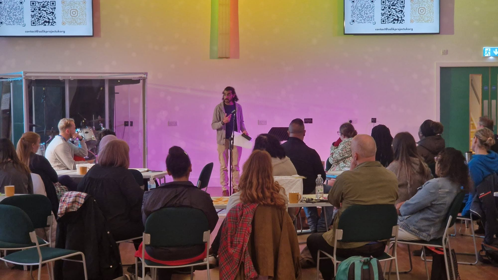

All Articles
News, Research & Insights

News & Events
Salik Project UK Shares Community Insights at Action Together Community Voices Network
Salik Project UK Project Coordinator Mustafa Hameed shared insights from our focus groups and community engagement work at the first Action Together Community Voices Network event.
Read More →

News & Events
Addiction Awareness Poster Competition — Rochdale
As part of our outreach engagement and addiction awareness with younger people we have partnered with the wonderful Rochdale Science Initiative for a poster competition.
Read More →

Educational
Nitazenes in the UK: A Hidden Risk in an Unpredictable Drug Supply
Nitazenes are a group of highly potent synthetic opioids that are increasingly being detected in the UK drug supply. Originally developed in the 1950s as potential painkillers, they were never approved for medical use.
Read More →

Research
Addiction, Responsibility and Reputation
Community-led insights from Rochdale. In February 2026, The Salik Project UK delivered a community focus group in Rochdale in partnership with High Level Northern Trust and BACP.
Read More →

Guest Post / Research
Building Bridges: A Collaborative Research Project for Islamic Faith Leaders & Drug and Alcohol Services
Substance-related harm remains a major public health challenge in Britain. Yet in many Muslim communities, it is still something rarely spoken about openly — often discussed only in private, if at all.
Read More →

News & Events
National Day of Action Against Addiction
Last year, we approached the Rochdale Council of Mosques with an idea. Could Rochdale's mosques come together on the National Day of Action Against Addiction to deliver a coordinated Friday sermon?
Read More →

Educational
Laughing Gas Is No Joke: What UK Hospitals Are Seeing in 2026
Nitrous oxide — often referred to as "laughing gas" — is still widely perceived as a low-risk party drug. But in 2026, health professionals are warning that this assumption is dangerously wrong.
Read More →

Educational
Cannabis Isn't as Harmless as Many People Think — Here's Why
Cannabis gets talked about like it's "not a big deal" — something softer than alcohol, a bit like a herbal relaxant. But cannabis is still illegal for personal use in the UK, and the reality is more complicated.
Read More →

Research
A Rochdale Perspective on Addiction: Women's Voices, Community Realities, Local Lessons
When addiction is discussed in policy or service settings, it is often framed around individuals. But when women in Rochdale speak about addiction, a different picture emerges.
Read More →

Educational
The Future of South Asian Youth in Rochdale: A Drug Crisis Hidden Behind Silence
Rochdale has always been a town shaped by strong families and community resilience. Yet beneath this image lies a growing concern that many families are reluctant to voice openly.
Read More →

Educational
From Harm to Hope in Practice: A Personal Reflection from Rochdale
As the Project Coordinator of the Salik Project UK, I've spent the last few months trying to understand why help so often comes late for some families. My reading would inevitably lead back to Dame Carol Black's review.
Read More →

Research
"We Don't Talk About It" — What Rochdale's South Asian Male Leaders Really Think About Addiction
When we sat down with six Pakistani-heritage male community leaders at Deeplish Community Centre for a two-hour conversation, one truth cut through everything: we don't talk about addiction until it becomes a crisis.
Read More →

Research
What We Learned from Our Women's Focus Group with WHAG
When we sat down with a group of South Asian women during our recent focus group held in partnership with WHAG, what emerged was far more than feedback. It was a window into private struggles and silent resilience.
Read More →

Educational
From Stigma to Support: Men's Mental Health and Addiction — A South Asian Perspective for Rochdale
Across the UK, men remain far more likely to die by suicide than women, especially in midlife, and many reach crisis without ever speaking to a professional.
Read More →

Research
Listening to the Silence: Lessons from Rochdale's South Asian Communities on Addiction
Over recent months, we listened to more than two dozen people from Rochdale's South Asian communities: women, young men, community and faith leaders. We held three focus groups and spoke one-to-one with others.
Read More →

Educational
How to Support a Loved One Who Is Isolating Due to Addiction: 5 Tips for South Asian Families
Addiction is a difficult illness, and in South Asian communities it is often misunderstood. Many families struggle in silence, unsure of what to do when a loved one begins withdrawing from family and friends.
Read More →

Educational
Laughing Gas and Our Communities: What Families Need to Know
If you've walked through parts of London, Birmingham or Manchester, you may have noticed the small silver canisters scattered on the ground. These are nitrous oxide canisters and they're causing serious harm.
Read More →

Research
Breaking the Silence: What Young Pakistani Men in Rochdale Told Us About Addiction
Addiction is not just a statistic — it's a lived reality for many in our community. Yet, in South Asian Muslim communities, it's often hidden behind closed doors.
Read More →

Educational
The Hungry Ghost: Trauma, Addiction, and the Quest to Fill the Void
In the modern world, addiction is often seen as a personal failure, a moral weakness, or a genetic misfortune. We stigmatize the addict while ignoring the deeper wounds that lie beneath the surface.
Read More →

Educational
How to Support a Loved One from a South Asian Background Struggling with Addiction
Addiction affects every community, but within South Asian families, it can be wrapped in layers of stigma, shame, and silence. Your support can be life-changing. Here's how to help.
Read More →

News & Events
A Visit to UKAT Oasis Runcorn Open Day: A Personal and Powerful Reminder
Recently, The Salik Project UK attended the Open Day at UKAT's Oasis Rehabilitation Centre in Runcorn. This event was not only a professional opportunity but also a deeply personal experience for us.
Read More →

Educational
Behind Closed Doors: The Silent Struggle of Addiction in South Asian Families
In many South Asian families, addiction is not just a personal battle — it's a source of shame. Whether it affects a son, daughter, parent, or spouse, families often respond with silence.
Read More →

Educational
Addiction in South Asian Communities: We Need to Talk
Despite traditionally lower rates of alcohol consumption among South Asians, there is a rising concern about drug misuse, hidden alcohol dependency, and cultural stigma that prevents many from seeking support.
Read More →

About Us
Why We Founded The Salik Project UK
On April 12th, 2025, our family experienced a deep and personal loss. A parent of three, only 43 years old, passed away after a long struggle with addiction.
Read More →